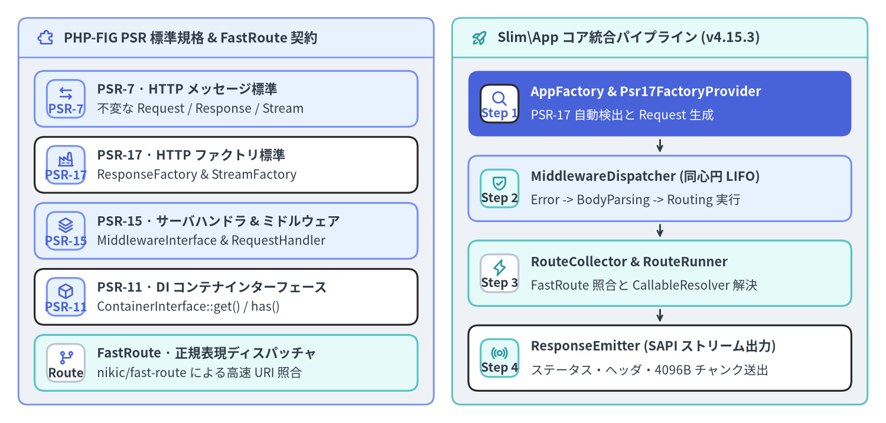
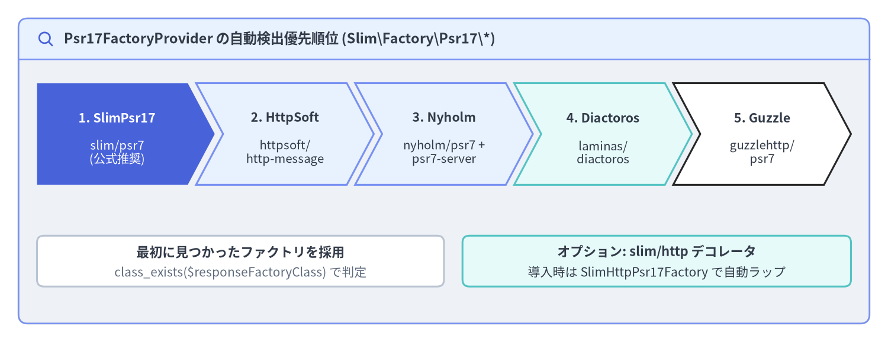

Slim 4 の設計思想と PSR 標準
Slim Framework（v4.15.3）は、特定の独自実装にロックインされるモノリシックな構造を排し、PHP-FIG の PSR 標準インターフェースを中核に据えて設計された軽量かつ堅牢な PHP マイクロフレームワークです。フレームワーク独自の HTTP ラッパークラスや密結合なサービスロケータ、特定の ORM を強制する代わりに、PSR-7（イミュータブルな HTTP メッセージとストリーム）、PSR-15（同心円ミドルウェアとリクエストハンドラ）、PSR-17（HTTP ファクトリ）、PSR-11（DI コンテナ）、そして Nikic FastRoute による高速な正規表現ルーティングをわずか 3,149 行のマイクロカーネルへと統合しています。

Source Code
from drawlib.canvas import save, setup
from drawlib.icons import phosphor
from drawlib.smartarts import CardList, Panel
from drawlib.styles import Colors, Styles
setup(width=192, height=92, dpi=150)
p_left = Panel(
"PHP-FIG PSR 標準規格 & FastRoute 契約",
style=Styles.Neutral.patch(shape_r=2.0),
header_style=Styles.PrimaryNeutral.patch(shape_line_width=1.2),
text_style=Styles.DarkBold.patch(text_size=11.0),
icon=phosphor.puzzle_piece,
icon_style=Styles.PrimaryBold,
header_variant="filled",
header_height=8.5,
)
p_left.draw((4.0, 4.0), width=90.0, height=84.0)
lx, lw, lh = p_left.get_content_box((4.0, 4.0), width=90.0, height=84.0, padding=(3.5, 3.0))
cl_left = CardList(
style=Styles.White,
text_style=Styles.DarkBold.patch(text_size=10.5),
description_style=Styles.Dark.patch(text_size=10.0),
badge_shape="rounded_rect",
badge_style=Styles.PrimaryNeutral,
badge_text_style=Styles.PrimaryBold.patch(text_size=10.0),
icon_style=Styles.PrimaryBold,
direction="vertical",
spacing=2.2,
)
cl_left.add(
"PSR-7 · HTTP メッセージ標準",
"不変な Request / Response / Stream",
badge_text="PSR-7",
icon=phosphor.arrows_left_right,
style=Styles.PrimaryNeutral,
)
cl_left.add(
"PSR-17 · HTTP ファクトリ標準",
"ResponseFactory & StreamFactory",
badge_text="PSR-17",
icon=phosphor.factory,
)
cl_left.add(
"PSR-15 · サーバハンドラ & ミドルウェア",
"MiddlewareInterface & RequestHandler",
badge_text="PSR-15",
icon=phosphor.stack,
style=Styles.PrimaryNeutral,
)
cl_left.add(
"PSR-11 · DI コンテナインターフェース",
"ContainerInterface::get() / has()",
badge_text="PSR-11",
icon=phosphor.cube,
)
cl_left.add(
"FastRoute · 正規表現ディスパッチャ",
"nikic/fast-route による高速 URI 照合",
badge_text="Route",
icon=phosphor.git_branch,
style=Styles.SecondaryNeutral,
badge_style=Styles.White.patch(shape_line_color=Colors.Gray4),
badge_text_style=Styles.DarkBold.patch(text_size=10.0),
)
cl_left.draw(xy=lx, width=lw, height=lh)
p_right = Panel(
"Slim\\App コア統合パイプライン (v4.15.3)",
style=Styles.Neutral.patch(shape_r=2.0),
header_style=Styles.SecondaryNeutral.patch(shape_line_width=1.2),
text_style=Styles.DarkBold.patch(text_size=11.0),
icon=phosphor.rocket_launch,
icon_style=Styles.SecondaryBold,
header_variant="filled",
header_height=8.5,
)
p_right.draw((98.0, 4.0), width=90.0, height=84.0)
rx, rw, rh = p_right.get_content_box((98.0, 4.0), width=90.0, height=84.0, padding=(3.5, 3.0))
cl_right = CardList(
style=Styles.White,
text_style=Styles.DarkBold.patch(text_size=10.5),
description_style=Styles.Dark.patch(text_size=10.0),
badge_shape="rounded_rect",
badge_style=Styles.SecondaryNeutral,
badge_text_style=Styles.DarkBold.patch(text_size=10.0),
icon_style=Styles.SecondaryBold,
direction="vertical",
spacing=2.8,
show_arrows=True,
arrow_style=Styles.DarkBold.patch(line_arrow_head_scale=10, line_width=1.4),
)
cl_right.add(
"AppFactory & Psr17FactoryProvider",
"PSR-17 自動検出と Request 生成",
badge_text="Step 1",
icon=phosphor.magnifying_glass,
style=Styles.PrimaryFlat,
text_style=Styles.WhiteBold.patch(text_size=10.5),
description_style=Styles.White.patch(text_size=10.0),
badge_style=Styles.White,
badge_text_style=Styles.PrimaryBold.patch(text_size=10.0),
icon_style=Styles.PrimaryBold,
)
cl_right.add(
"MiddlewareDispatcher (同心円 LIFO)",
"Error -> BodyParsing -> Routing 実行",
badge_text="Step 2",
icon=phosphor.shield_check,
style=Styles.PrimaryNeutral,
)
cl_right.add(
"RouteCollector & RouteRunner",
"FastRoute 照合と CallableResolver 解決",
badge_text="Step 3",
icon=phosphor.lightning,
style=Styles.SecondaryNeutral,
badge_style=Styles.White.patch(shape_line_color=Colors.Gray4),
badge_text_style=Styles.DarkBold.patch(text_size=10.0),
)
cl_right.add(
"ResponseEmitter (SAPI ストリーム出力)",
"ステータス・ヘッダ・4096B チャンク送出",
badge_text="Step 4",
icon=phosphor.broadcast,
)
cl_right.draw(xy=rx, width=rw, height=rh)
save()
設計思想：モノリシックな密結合からの脱却と標準インターフェース合成
従来の PHP フレームワーク（Slim 3 を含む）では、フレームワーク自身が特定の DI コンテナ（Pimple）や独自の HTTP メッセージ実装を内部に抱え込んでいました。この方式は小規模なスクリプトでは手軽な反面、他のフレームワークとの間でミドルウェア資産を共有できなかったり、高スループットなマイクロサービス向けに軽量な PSR-7 実装へ差し替えたりすることが困難でした。
Slim 4 はこの依存関係を完全に逆転させ、Slim\App が PHP-FIG の標準インターフェース（Psr\*）と nikic/fast-route のみに依存するアーキテクチャへと刷新されました。認証ミドルウェア、入力バリデーション、Action コントローラのすべてが標準インターフェースに準拠するため、あらゆる PSR-15 / PSR-7 エコシステムとシームレスに相互運用できます。
| 標準規格 / パッケージ | Composer 契約パッケージ | 主要インターフェース | Slim v4.15.3 の対応クラス |
|---|---|---|---|
| PSR-7（HTTP メッセージ） | psr/http-message（^1.1 || ^2.0） |
ServerRequestInterface, ResponseInterface, StreamInterface, UriInterface |
App::handle(), ResponseEmitter, BodyParsingMiddleware, 各種 Strategy で使用 |
| PSR-15（サーバハンドラ） | psr/http-server-handler & psr/http-server-middleware（^1.0） |
RequestHandlerInterface, MiddlewareInterface |
Slim\App, Slim\MiddlewareDispatcher, Slim\Routing\RouteRunner, Slim\Routing\Route |
| PSR-17（HTTP ファクトリ） | psr/http-factory（^1.1） |
ResponseFactoryInterface, StreamFactoryInterface, ServerRequestFactoryInterface |
Slim\Factory\AppFactory, Slim\Factory\Psr17\Psr17FactoryProvider |
| PSR-11（DI コンテナ） | psr/container（^1.0 || ^2.0） |
ContainerInterface（get(), has()） |
AppFactory::createFromContainer(), Slim\CallableResolver |
| PSR-3（ロガー標準） | psr/log（^1.1 || ^2.0 || ^3.0） |
LoggerInterface |
Slim\Logger, Slim\Middleware\ErrorMiddleware, Slim\Handlers\ErrorHandler |
| FastRoute（URI ルータ） | nikic/fast-route（^1.3） |
FastRoute\Dispatcher, FastRoute\RouteParser |
Slim\Routing\RouteCollector, RouteResolver, FastRouteDispatcher |
PSR-7 イミュータブルな HTTP メッセージ
PSR-7 は、HTTP リクエストとレスポンスをストリーム指向のボディ（Psr\Http\Message\StreamInterface）を持つイミュータブル（不変）な値オブジェクトとしてモデル化します。$request->withAttribute('user', $user) や $response->withHeader('Content-Type', 'application/json')->withStatus(201) といった変更メソッド（with*）を呼び出すと、元のインスタンスは一切変更されず、状態が更新された新しいクローンインスタンスが返されます。
このイミュータブル設計により、上流のミドルウェアがヘッダや属性を書き換えた際に下流の監査ログやエラーハンドラが予期せぬ副作用を受けるバグを根絶できます。なお、ボディへの書き込み（StreamInterface::write()）は背後の php://temp 等のストリームリソースに対して行われ、ヘッダ・ステータスコード・パース済みボディ・リクエスト属性はすべて Copy-on-Write で安全に管理されます。
<?php
declare(strict_types=1);
use Psr\Http\Message\ResponseInterface as Response;
use Psr\Http\Message\ServerRequestInterface as Request;
$app->post('/api/v1/orders', function (Request $request, Response $response): Response {
// PSR-7 ヘッダや BodyParsingMiddleware によって解析されたリクエストボディを取得
$idempotencyKey = $request->getHeaderLine('X-Idempotency-Key');
$data = (array) $request->getParsedBody();
// シリアライズした JSON 文字列を PSR-7 StreamInterface へ書き込み
$payload = json_encode([
'order_id' => 'ord_94810',
'idempotency_key' => $idempotencyKey,
'items_count' => count($data['items'] ?? []),
], JSON_THROW_ON_ERROR);
$response->getBody()->write($payload);
// すべての with* メソッドは新しいイミュータブルな ResponseInterface を返す
return $response
->withStatus(201)
->withHeader('Content-Type', 'application/json')
->withHeader('Cache-Control', 'no-store');
});
PSR-15 リクエストハンドラと同心円 LIFO ミドルウェア
PSR-15 は、Slim 4 の実行パイプラインの骨格となる 2 つのインターフェースを定義しています。
Psr\Http\Server\RequestHandlerInterface: 単一のメソッドhandle(ServerRequestInterface $request): ResponseInterfaceを持ちます。Slim\App、Slim\Routing\RouteRunner、Slim\Routing\Routeはすべてこのインターフェースを実装しています。Psr\Http\Server\MiddlewareInterface:process(ServerRequestInterface $request, RequestHandlerInterface $handler): ResponseInterfaceを持ちます。ミドルウェアは受信した$requestを検査・加工し、$handler->handle($request)を呼び出して内側のレイヤへ処理を委譲したうえで、返ってきた$responseを検査・加工して返却します。
Slim\MiddlewareDispatcher において $app->add($middleware) を呼び出すと、現在のスタック先端（$this->tip、初期値は RouteRunner）が新しい外側の RequestHandlerInterface 無名クラスでラップされます。その結果、ミドルウェアは LIFO（後入れ先出し：Last-In, First-Out） の同心円状に実行されます。つまり、最後に $app->add() したミドルウェアがリクエスト受信時に最初に実行され、レスポンス返却時に最後に通過します。
<?php
declare(strict_types=1);
namespace App\Middleware;
use Psr\Http\Message\ResponseInterface;
use Psr\Http\Message\ServerRequestInterface;
use Psr\Http\Server\MiddlewareInterface;
use Psr\Http\Server\RequestHandlerInterface;
final class RequestTimingMiddleware implements MiddlewareInterface
{
public function process(ServerRequestInterface $request, RequestHandlerInterface $handler): ResponseInterface
{
$startTime = hrtime(true);
// 内側の PSR-15 レイヤ（次のミドルウェアまたは RouteRunner）へ処理を委譲
$response = $handler->handle($request);
// 復路で経過ミリ秒を計測し、イミュータブルなレスポンスヘッダとして付与
$elapsedMs = (hrtime(true) - $startTime) / 1_000_000;
return $response->withHeader('X-Response-Time-Ms', sprintf('%.2f', $elapsedMs));
}
}
PSR-17 HTTP ファクトリと自動検出メカニズム
Slim 4 は特定の PSR-7 実装をハードコードしないため、空の ResponseInterface を生成する際には PSR-17（psr/http-factory） の ResponseFactoryInterface::createResponse() を使用し、PHP のスーパーグローバル変数（$_SERVER, $_COOKIE, $_GET, $_POST, $_FILES）から ServerRequestInterface を組み立てる際には ServerRequestCreatorInterface を使用します。
引数なしで AppFactory::create() を呼び出すと、AppFactory::determineResponseFactory() および ServerRequestCreatorFactory::determineServerRequestCreator() が Slim\Factory\Psr17\Psr17FactoryProvider::$factories に登録された 5 つの PSR-17 実装を優先順位に従って自動検出します。

Source Code
from drawlib.canvas import save, setup
from drawlib.icons import phosphor
from drawlib.shapes import rectangle
from drawlib.smartarts import ChevronProcess, Panel
from drawlib.styles import Colors, Styles
from drawlib.text import text
setup(width=192, height=74, dpi=150)
outer = Panel(
"Psr17FactoryProvider の自動検出優先順位 (Slim\\Factory\\Psr17\\*)",
style=Styles.Neutral.patch(shape_r=2.0),
header_style=Styles.PrimaryNeutral.patch(shape_line_width=1.2),
text_style=Styles.DarkBold.patch(text_size=11.2),
icon=phosphor.magnifying_glass,
icon_style=Styles.PrimaryBold,
header_variant="filled",
header_height=8.8,
)
outer.draw((4.0, 4.0), width=184.0, height=66.0)
proc = ChevronProcess(
style=Styles.White,
text_style=Styles.DarkBold.patch(text_size=10.2),
description_style=Styles.Dark.patch(text_size=9.8),
corner_angle=62.0,
spacing=1.8,
flat_left_end=True,
)
proc.add(
"1. SlimPsr17",
description="slim/psr7\n(公式推奨)",
style=Styles.PrimaryFlat,
text_style=Styles.WhiteBold.patch(text_size=10.2),
description_style=Styles.White.patch(text_size=9.8),
)
proc.add(
"2. HttpSoft",
description="httpsoft/\nhttp-message",
style=Styles.PrimaryNeutral,
)
proc.add(
"3. Nyholm",
description="nyholm/psr7 +\npsr7-server",
style=Styles.PrimaryNeutral,
)
proc.add(
"4. Diactoros",
description="laminas/\ndiactoros",
style=Styles.SecondaryNeutral,
)
proc.add(
"5. Guzzle",
description="guzzlehttp/\npsr7",
style=Styles.White,
)
proc.draw(xy=(8.0, 34.0), width=176.0, height=22.0)
rectangle((52.0, 17.5), width=88.0, height=11.0, style=Styles.White.patch(shape_r=1.5, shape_line_color=Colors.Gray4))
text((52.0, 19.5), "最初に見つかったファクトリを採用", style=Styles.DarkBold.patch(text_size=10.5))
text((52.0, 15.0), "class_exists($responseFactoryClass) で判定", style=Styles.Muted.patch(text_size=10.0))
rectangle((142.0, 17.5), width=84.0, height=11.0, style=Styles.SecondaryNeutral.patch(shape_r=1.5))
text((142.0, 19.5), "オプション: slim/http デコレータ", style=Styles.DarkBold.patch(text_size=10.5))
text((142.0, 15.0), "導入時は SlimHttpPsr17Factory で自動ラップ", style=Styles.Dark.patch(text_size=10.0))
save()
Psr17FactoryProvider::getFactories() が検査する 5 つの標準ファクトリアダプタと優先順位は以下の通りです。
| 優先度 | アダプタクラス（Slim\Factory\Psr17\*） |
必要な Composer パッケージ | 内部 ResponseFactory クラス |
グローバルからの ServerRequest 生成メソッド |
|---|---|---|---|---|
| 1 | SlimPsr17Factory |
slim/psr7 |
Slim\Psr7\Factory\ResponseFactory |
Slim\Psr7\Factory\ServerRequestFactory::createFromGlobals |
| 2 | HttpSoftPsr17Factory |
httpsoft/http-message |
HttpSoft\Message\ResponseFactory |
HttpSoft\ServerRequest\ServerRequestCreator::createFromGlobals |
| 3 | NyholmPsr17Factory |
nyholm/psr7 + nyholm/psr7-server |
Nyholm\Psr7\Factory\Psr17Factory |
Nyholm\Psr7Server\ServerRequestCreator::fromGlobals |
| 4 | LaminasDiactorosPsr17Factory |
laminas/laminas-diactoros |
Laminas\Diactoros\ResponseFactory |
Laminas\Diactoros\ServerRequestFactory::fromGlobals |
| 5 | GuzzlePsr17Factory |
guzzlehttp/psr7 |
GuzzleHttp\Psr7\HttpFactory |
GuzzleHttp\Psr7\ServerRequest::fromGlobals |
[!TIP] オプションの
slim/httpデコレータ統合（SlimHttpPsr17Factory）:slim/httpパッケージがインストールされている場合、AppFactory::attemptResponseFactoryDecoration()とServerRequestCreatorFactory::attemptServerRequestCreatorDecoration()が検出されたファクトリを自動的にSlim\Http\Factory\DecoratedResponseFactoryおよびSlimHttpServerRequestCreatorでラップし、$response->withJson($data)などの便利メソッドを追加します。純粋な PSR-7 オブジェクトのみを使用したい場合はAppFactory::setSlimHttpDecoratorsAutomaticDetection(false)で自動ラップを無効化できます。
外部 SDK の依存関係などで複数の PSR-7 パッケージ（例：guzzlehttp/psr7 と nyholm/psr7）が vendor/ 内に共存している場合は、AppFactory::create() を呼ぶ前に使用する PSR-17 ファクトリを明示的に指定できます。
<?php
declare(strict_types=1);
use Nyholm\Psr7\Factory\Psr17Factory;
use Slim\Factory\AppFactory;
require __DIR__ . '/../vendor/autoload.php';
// Nyholm の統合 PSR-17 ファクトリ（ResponseFactory と StreamFactory の両方を実装）を明示的に設定
$nyholmFactory = new Psr17Factory();
AppFactory::setResponseFactory($nyholmFactory);
AppFactory::setStreamFactory($nyholmFactory);
// 純粋な PSR-7 インターフェースのみを使用する場合は slim/http の自動検出を無効化
AppFactory::setSlimHttpDecoratorsAutomaticDetection(false);
$app = AppFactory::create();
PSR-11 コンテナ・CallableResolver・FastRoute の連携
PSR-7 メッセージと PSR-15 ミドルウェアを実際のアプリケーションとして機能させるため、Slim 4 は PSR-11（Psr\Container\ContainerInterface） DI コンテナと連動する 2 つのコア機構を備えています。
Slim\CallableResolver（AdvancedCallableResolverInterface）: ルートハンドラやミドルウェアとして指定された Invokable クラス名（CreateUserAction::class）、配列形式（[UserController::class, 'show']）、Slim 独自の文字列記法（'App\Controller\UserController:show'）、または無名関数（Closure）を、PSR-11 コンテナから遅延解決して実行可能な Callable へと変換します。- FastRoute 統合（
Slim\Routing\*）:Slim\AppはRouteCollectorProxyを継承しており、$app->get()や$app->post()、$app->group()によるルート定義をRouteCollectorに集約します。実行時にはRoutingMiddlewareがFastRouteDispatcherを用いて URI パターンとパラメータを高速に照合し、最内層のRouteRunnerがマッチしたRouteを実行します。
<?php
declare(strict_types=1);
use DI\ContainerBuilder;
use Psr\Http\Message\ResponseInterface as Response;
use Psr\Http\Message\ServerRequestInterface as Request;
use Slim\Factory\AppFactory;
use Slim\Routing\RouteCollectorProxy;
require __DIR__ . '/../vendor/autoload.php';
// PSR-11 コンテナ（PHP-DI）を構築して Slim\App を初期化
$builder = new ContainerBuilder();
$container = $builder->build();
$app = AppFactory::createFromContainer($container);
// FastRoute のグループ機能を用いてバージョン付き API ルートを定義
$app->group('/api/v1', function (RouteCollectorProxy $group): void {
$group->get('/health', function (Request $request, Response $response): Response {
$response->getBody()->write('{"status":"ok"}');
return $response->withHeader('Content-Type', 'application/json');
})->setName('api.health');
});
PSR 標準の全体像を把握したら、次は クイックスタートと基本ミドルウェア に進んで Composer によるセットアップと 3 つの基本ミドルウェアの順序ルールを確認するか、モジュラー設計と Action コントローラ および PSR-11 コンテナと Callable 解決 で実践的なアプリケーション構成を学んでください。また、全クラスの厳密なシグネチャや内部コールグラフについては Slim 4 API リファレンス および Slim 4 内部アーキテクチャ解説 もあわせてご参照ください。